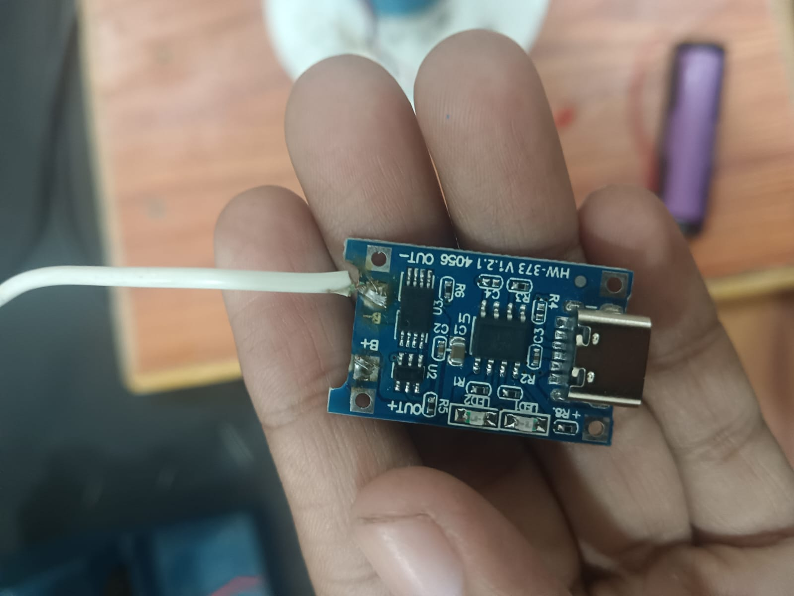
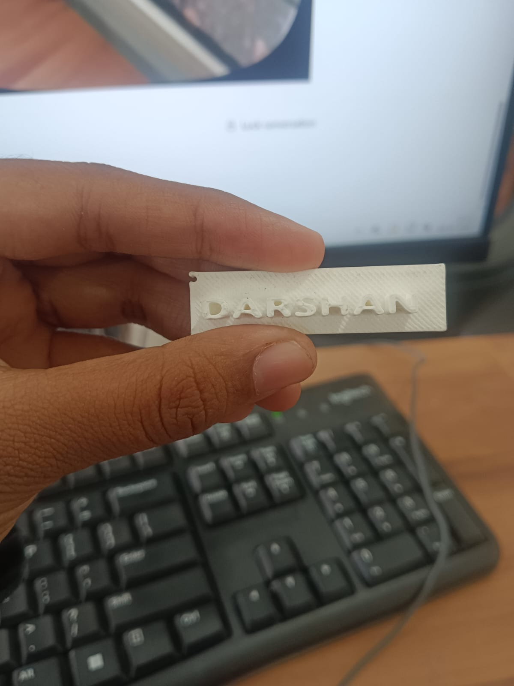
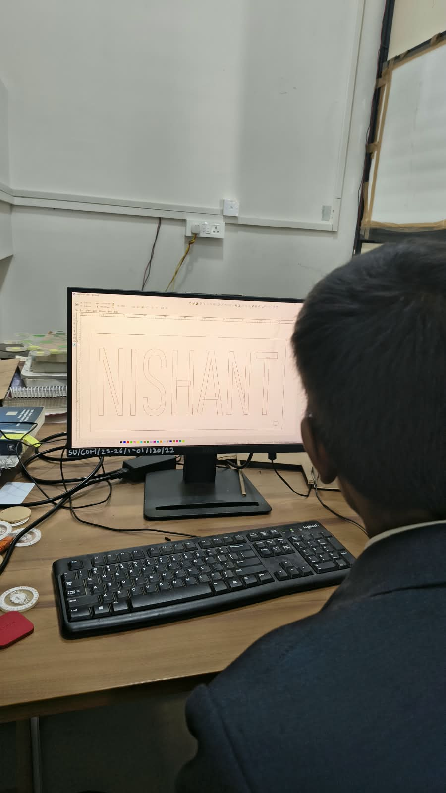

An innovative renewable energy project focused on harnessing wind energy
through a vertical axis wind turbine. The project explores turbine design,
manufacturing, fabrication and sustainable energy generation.
VERTX is a vertical axis wind turbine project designed to convert wind
energy into useful mechanical and electrical energy. Unlike conventional
horizontal axis turbines, a vertical axis turbine can accept wind from
different directions without requiring continuous alignment.
Renewable Energy
Uses naturally available wind energy to generate power.
Innovative Design
Focuses on a compact and practical vertical-axis arrangement.
Modern Manufacturing
Uses 3D printing and laser cutting for component fabrication.
Working Principle
Wind flowing over the turbine blades creates aerodynamic forces that
produce rotation around a vertical shaft. The rotating shaft transfers
mechanical energy to a generator, which converts it into electrical energy.
1. Wind Capture
The blades interact with incoming wind.
2. Rotor Rotation
Aerodynamic forces rotate the turbine rotor.
3. Power Transmission
The shaft transfers rotational motion.
4. Electricity Generation
The generator converts mechanical energy into electrical energy.
Design and Development
The turbine design involves planning the blade geometry, rotor structure,
shaft arrangement, support frame and generator mounting. CAD modelling
helps visualize the components before manufacturing and assembly.
CAD Modelling
Digital modelling and component design before fabrication.
Component Fabrication
Manufacturing selected parts using suitable fabrication techniques.
Assembly
Joining and aligning the fabricated components into a working structure.
3D Printing in VERTX
3D printing is an additive manufacturing process used to produce
three-dimensional objects from digital CAD models. Material is deposited
layer by layer to create the required component.
Working Process
Create a 3D CAD model.
Export the model into STL format.
Generate toolpaths using slicing software.
Print the component layer by layer.
Remove supports and finish the component.
Materials Used
PLA filament
ABS filament
PETG filament
Other suitable engineering polymers
Applications in VERTX
Prototype development
Customized small components
Mounting brackets and supports
Design testing and modification
3D Printing Advantages
3D printing allows complex shapes, rapid prototyping, reduced material
waste and easy design modifications. It is especially useful during
the development and testing stages of engineering projects.
3D Printing Images

3D Printing – Image 1

3D Printing – Image 2
3D Printing – Image 3
3D Printing – Image 4
3D Printing – Image 5
Laser Cutting in VERTX
Laser cutting is a modern manufacturing technique that uses a focused
laser beam to cut or engrave materials accurately. The laser follows
a programmed digital design to produce precise shapes and profiles.
Working Process
Prepare the component design in CAD software.
Convert the design into a compatible file.
Set the material and machine parameters.
Position the material on the cutting bed.
Laser beam cuts the required profile.
Materials
Acrylic sheets
Plywood and suitable wood sheets
Cardboard
Other laser-compatible materials
Applications in VERTX
Accurate profile cutting
Fabrication of flat components
Prototype parts
Design templates and mounting plates
Laser Cutting Advantages
Laser cutting provides high accuracy, clean edges, repeatability,
complex profile cutting and reduced manual effort. It helps manufacture
precise components from digital designs.
Laser Cutting Images
Laser Cutting – Image 1
Laser Cutting – Image 2
Laser Cutting – Image 3

Laser Cutting – Image 4
Manufacturing Video
Watch the manufacturing demonstration showing the fabrication process
used during the development of the VERTX project.
Project Development
The development process combines CAD design, additive manufacturing,
laser cutting, component fabrication and final assembly.
Future Scope
Improving blade aerodynamic performance.
Increasing energy conversion efficiency.
Developing a more compact turbine structure.
Integrating improved generator systems.
Using advanced and lightweight materials.
Exploring smart monitoring systems.
Testing the turbine under different wind conditions.
Conclusion
The VERTX project demonstrates the potential of vertical axis wind
turbines for renewable energy applications. The use of 3D printing
and laser cutting supports modern prototyping and manufacturing.
The project provides practical exposure to design, fabrication,
assembly and sustainable energy technology.